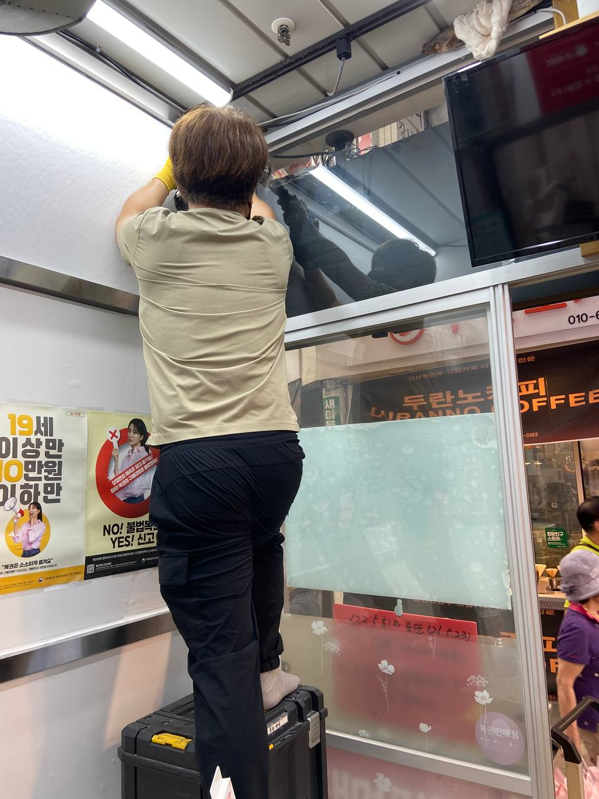
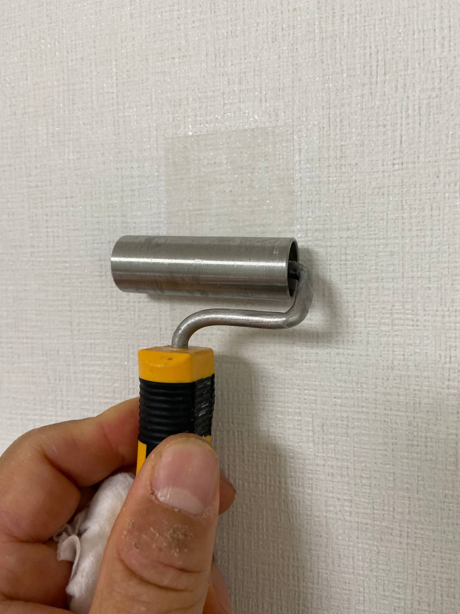
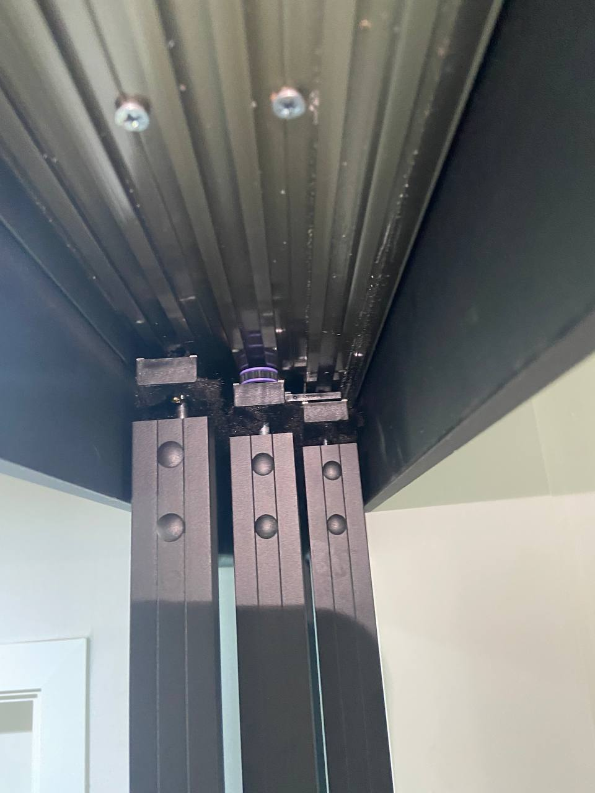
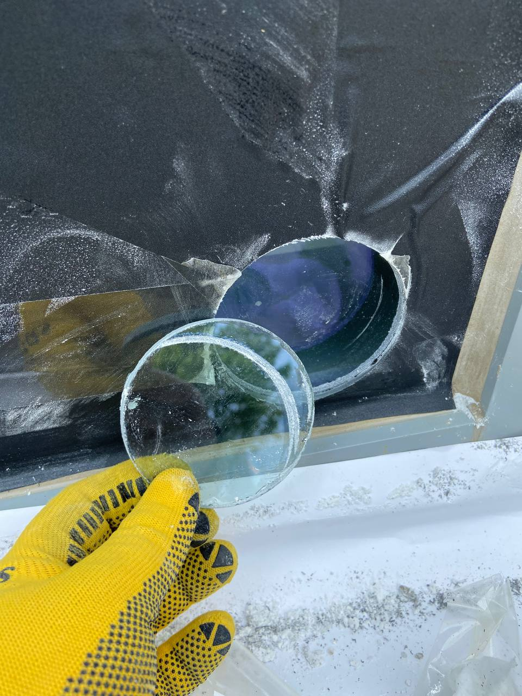
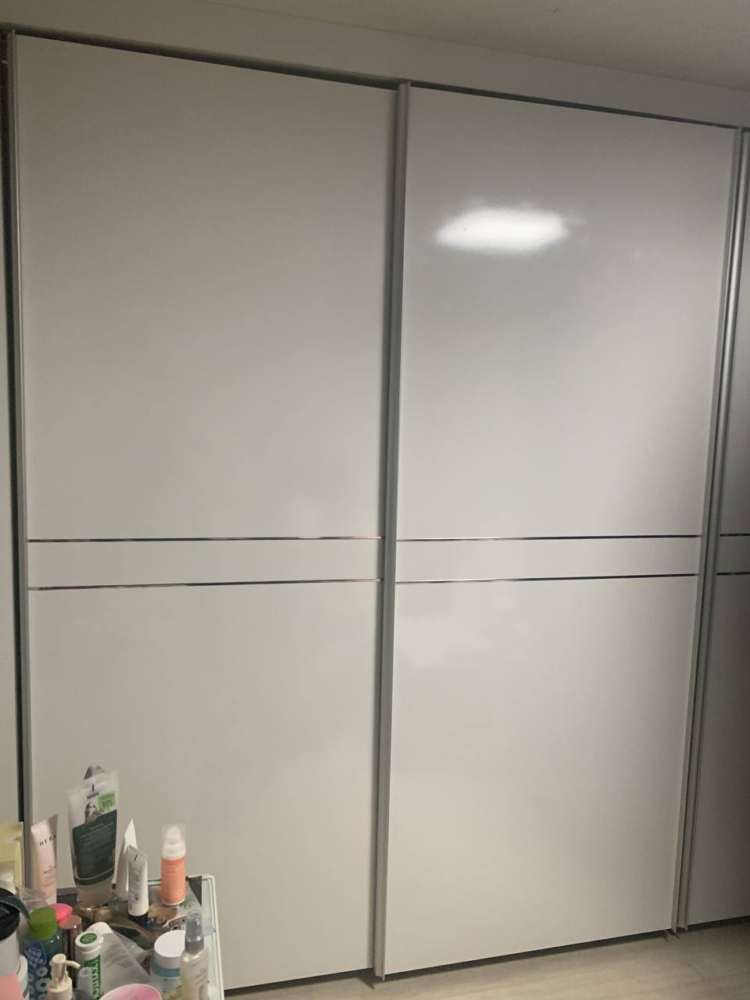

유리 · 벽체 타공
에어컨 배관, 배기, 설비 연결을 위한 현장 치수 확인과 보호 작업.
유리타공 사례 95건서울 · 경기 · 인천 생활 보수 포트폴리오
네이버 블로그에 쌓인 실제 시공 기록 1,176건을 홈페이지로 정리했습니다. 유리 타공, 중문 레일, 붙박이장 롤러, 벽지 보수까지 사진과 작업 흐름을 보고 문의할 수 있습니다.
Service Focus
세븐홈케어는 생활 보수 중심으로, 홍프로집박사는 난이도 있는 타공과 도어 하드웨어 작업을 중심으로 사례를 축적하고 있습니다. 홈페이지에서는 브랜드, 작업 유형, 지역 키워드로 기존 작업 기록을 확인할 수 있습니다.
Services
에어컨 배관, 배기, 설비 연결을 위한 현장 치수 확인과 보호 작업.
유리타공 사례 95건3연동 중문, 레일, 와이어, 부속 파손 확인 후 작동감 복구.
중문수리 사례 553건문 처짐, 레일 끼임, 롤러 파손으로 열고 닫히지 않는 상태 조정.
붙박이장 사례 41건찢김, 들뜸, 오염 부위의 범위를 확인해 필요한 보수 방식 안내.
벽지보수 사례 283건샤워부스 쫄대, 물막이, 욕실 부속 문제를 현장 상태에 맞춰 확인.
욕실보수 사례 40건Recent Work
전달받은 사진과 영상을 현장별로 분류해 제목, 본문, 태그, 대표 사진까지 정리했습니다. 블로그 발행이 완료되면 홈페이지 사례 URL도 함께 연결합니다.

세븐홈케어
발행 준비 완료상가 유리면 보호, 배관 위치 확인, 원형 타공 마감까지 고객 사진 기준으로 포스팅 원고를 구성했습니다.

세븐홈케어
발행 준비 완료이삿짐 이동 중 찢어진 면의 절개, 접착, 질감 정리 흐름으로 원고를 작성했습니다.

세븐홈케어
발행 준비 완료벨트 끊어짐, 레일, 댐퍼 세트 확인 내용을 순서대로 정리해 수리 사례 원고로 만들었습니다.

홍프로집박사
발행 준비 완료에어컨 배관 구멍 작업 전후 사진을 중심으로 상가 유리 타공 포스팅을 준비했습니다.

홍프로집박사
발행 준비 완료깨진 롤러로 내려앉은 문을 분리하고 교체 후 작동 확인까지 사례형 본문으로 정리했습니다.
Process
실제 현장 사진과 짧은 작업 영상을 기준으로 상담, 판단, 작업, 기록 흐름을 확인할 수 있습니다.



Naver Blog
네이버 블로그에 올렸던 포스팅을 홈페이지 내부 페이지로 가져와 제목, 본문, 사진 흐름을 그대로 확인할 수 있게 정리했습니다. 현재 공개 포스팅 1,176건을 브랜드와 작업 유형별로 탐색할 수 있습니다.
블로그 보기기존 블로그 원문 주소와 모바일 원문 링크를 함께 보존합니다.
브랜드, 작업 유형, 제목, 지역 키워드로 내부 사례를 찾을 수 있습니다.
비슷한 사례를 본 뒤 전화 상담으로 바로 이어지게 구성했습니다.
Latest Posts
FAQ
대략적인 작업 범위는 확인할 수 있지만, 타공과 도어 부속은 현장 조건에 따라 달라질 수 있습니다.
유리 두께, 필름, 위치, 주변 프레임을 확인한 뒤 가능 여부와 보호 방식을 안내합니다.
가능합니다. 비슷한 사례 URL이나 사진을 함께 보내주시면 확인이 빠릅니다.
Contact
전체 사진, 문제 부위 근접 사진, 설치·수리 위치를 함께 보내주시면 확인이 빠릅니다. 전화 상담: 010-9435-9429